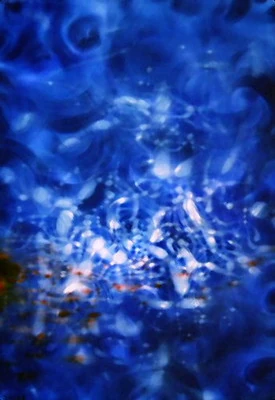

コレクション
収蔵作品（一部）
作品資料の収蔵記録とオークション記録をもとに、シリーズ順に並べています。収蔵家は業種のみを記し、氏名は記しません。
オークション記録


植相


随行

随行 No.28 2009法曹界の収蔵家 随行 No.26 2009医療界の収蔵家
随行 No.26 2009医療界の収蔵家 随行 No.1 2009建設業の収蔵家
随行 No.1 2009建設業の収蔵家 随行 No.5 2009建設業の収蔵家
随行 No.5 2009建設業の収蔵家 随行 No.13 2009建設業の収蔵家
随行 No.13 2009建設業の収蔵家 随行 No.14 2009建設業の収蔵家
随行 No.14 2009建設業の収蔵家 随行 No.17 2009建設業の収蔵家
随行 No.17 2009建設業の収蔵家
雲・山・水


花―形と色
 白いバラ-1 2011鉄鋼業の収蔵家
白いバラ-1 2011鉄鋼業の収蔵家 白いバラ-2 2011食品業の収蔵家
白いバラ-2 2011食品業の収蔵家 ピンクオレンジのバラ-1 2011芸能界の収蔵家
ピンクオレンジのバラ-1 2011芸能界の収蔵家 オリエンタルリリー 2011法曹界の収蔵家
オリエンタルリリー 2011法曹界の収蔵家 黄色いヒメユリ-2 2012美術品業の収蔵家
黄色いヒメユリ-2 2012美術品業の収蔵家